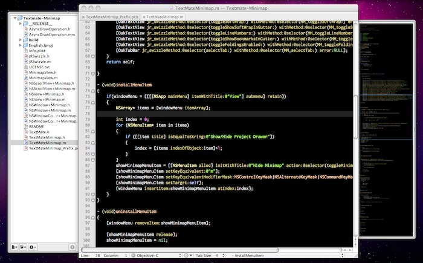

A minimap plugin for TextMate.

This project is my (by no means finished) attempt at making a minimap plugin for TextMate.
It still slows down a bit on bigger documents, but I think it is ready for some testing... so have a go and tell me what you think ;-)!
At the moment, it only works with 10.5 and 10.6.
News
28.02.2010: New release 0.6 is available for
download.
It adds a couple of preferences that fix several issues people had with version 0.5.
For details see "Usage".
Usage
Hit ⌃⌥⌘m to show/hide the minimap (analogue to ⌃⌥⌘d for the project drawer), or use the menu item under "View". Click anywhere on the map to go to that line.
Update: You can now open TextMate's Preferences to configure the minimap. Available options are
- changing the keyboard shortcut
- changing where the minimap appears (left/right/auto)
- configuring whether the minimap shows up automatically on new and on reopened documents
- some fine-tuning parameters for the minimap's drawing behaviour to experiment with
The configuration options are explained in their respective tooltips.
Install
Download the compiled plugin from the GitHub downloads page. Just unzip and double click, TextMate will do the rest.
Alternatively, check out the source, and build with XCode.
Authors
Julian Eberius (julian \at\ eberius-mail.de)
License
MIT License (see LICENSE.txt)
Download
You can download this project's source in either
zip or
tar formats.
You can also clone the project with Git
by running:
$ git clone git://github.com/JulianEberius/Textmate-Minimap
The ready-to-use Textmate plugin is available under downloads.